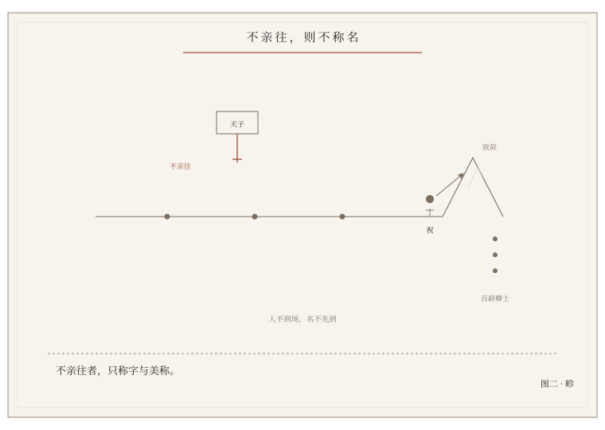

曲礼下 · 二·四十 · 第 163 课
天子巡守，临视诸侯，使祝致辞于鬼神，称「有天王某甫」。注「畛，致也……不名者，不亲往也」。
说什么事：临诸侯，畛于鬼神，曰「有天王某甫」。
落在哪一层：礼，兼及礼意。论「不亲往」时，名与字如何用。
为何编在此位：上节论临祭祀之祝辞，此节论不亲临而遣使致辞之辞。一亲一不亲，称谓随之而变。
【经】臨諸侯，畛於鬼神，曰「有天王某甫」。
【注】畛，致也。祝告致於鬼神辭也。曰「有天王某甫」，某甫，且字也。不名者，不親往也。《周禮》大會同，過山川，則大祝用事焉。鬼神謂百辟卿士也。畛或為祗。
【疏】此谓天子巡守，祝告神辞也。巡守遍于方岳，临视诸侯，故曰「临诸侯」也。郑云：「以尊适卑曰临。」「畛于鬼神」者，畛，致也。王往方岳，凡所过山川，悉使祝往致辞，告于山川鬼神也。「曰有天王某甫」者，既不自往，故祝辞不称名，而云「某甫」者，郑云「且字」也。解「且字」者，云某是天子之字，甫是男子美称也。祝称天子字，而下云甫，是尼父之类也。故《穀梁传》云：「父犹傅也，男子美称也。」《士冠礼》注曰：「甫，丈夫美称。」而《杂记》：「附于殇，称阳童某甫。」郑注云：「尊神不名，为之造字。」以此而言，「某」者是字，「甫」者，丈夫美称。而郑所以谓为「且字」者，旧说云，未斥其人，且以美称配成其字。《音义隐》云：「且，假借此字也。」「致鬼神」，谓天子所行过诸侯之国，则止于诸侯之庙，而使太祝告鬼神，云「有天王某甫」。「鬼神谓百辟卿士」者，谓昔为诸侯卿士者。
临诸侯 注疏「以尊适卑曰临」。巡守而临视之。
畛 注「致也」。致辞于鬼神。注又存异文「畛或为祗」。
某甫 注「且字也」。某为字，甫为男子美称。
不名者，不亲往也 注语。亲往则称名，遣使则不名。
百辟卿士 注「鬼神谓百辟卿士」。谓昔为诸侯卿士者。
天子巡守，临视诸侯，向鬼神致辞，说「有天王某人甫」。
此节专辨一件事：不亲往，则不称名。亲祭宗庙称「孝王某」，是亲在；遣祝致辞于山川，只称字与美称，因为人不在。礼的称谓，先问人在不在，再问该称什么。
第一层 临字的分寸 疏引郑「以尊适卑曰临」。天子至诸侯之境，是尊者到卑者之处，故曰临。一字之中有位分。
第二层 畛之训 畛，致也。不是自己去说，是把话送到。注又存「或为祗」之异文，一字两读，礼家并存。
第三层 不名之故 注说得极简：「不名者，不亲往也。」亲在则称名以自致，不在则不敢以名相加。此与上节「孝王某」正成对照。
第四层 且字之法 某是字，甫是美称，合之曰「某甫」。郑谓之「且字」：未斥其人，且以美称配成其字。《音义隐》云「且，假借此字也」。礼在不亲之时，宁用一个「假借」的称，也不肯直呼其名。
与今日何干 托人传话，代称与自称不同。人不到场，名就不该先到。
| 左 | 右 |
|---|---|
| 临诸侯 | 以尊适卑曰临 |
| 畛于鬼神 | 畛，致也，致辞于神 |
| 曰有天王某甫 | 某为字，甫为美称 |
| 不名者，不亲往也 | 人不在，名不先到 |
| 且字 | 未斥其人，假借美称 |
| 鬼神谓百辟卿士 | 兼及昔为诸侯卿士者 |
画一条自左向右的巡行路线（细实线），线上三处小方点（示方岳）。路线上方一枚方印形（示天子，不画人），印与路线之间画一道向下的短箭、箭尾断开（示不亲往）；路线右端一座小山轮廓（示山川），山前立一个持简的细小人形（示祝），人形与山之间一道短箭（示致辞）。山右侧另画三个小圆并列（示百辟卿士）。不写文字。赭色只用在断开的那道短箭上。
